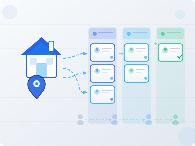
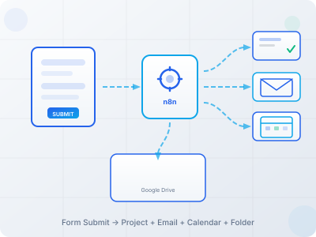
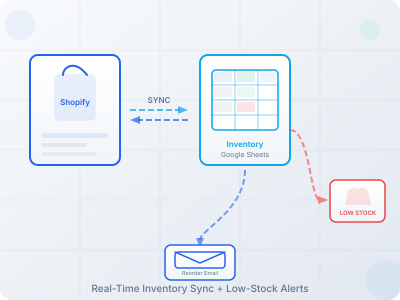
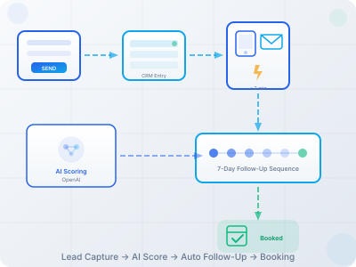

Example Engagements
Real workflow automations we've designed and deployed. From client onboarding to inventory sync to autonomous lead generation — these are systems built to run.
Real workflow automations we've designed and deployed. From client onboarding to inventory sync to autonomous lead generation — these are systems built to run.

We needed to prove that a fully autonomous lead generation system could be built, deployed, and left running with zero daily intervention. The DFW real estate market was the testing ground — 33 cities, thousands of FSBO listings going uncontacted, and no affordable off-the-shelf solution that could handle SEO, lead capture, AI qualification, SMS outreach, and voicemail processing in one system.
An 85+ page SEO site covering 33 DFW city landing pages, backed by a 12-workflow n8n automation engine, Supabase database, and integrated AI across the entire pipeline.
Landing page form → Webhook capture → Supabase lead record → GPT-4o qualification → Lead scoring (0–100) → Agent routing → Automated follow-up email → Reply handling → Appointment booking. In parallel: Craigslist FSBO scraper → Contact extraction → SMS outreach via Twilio → Reply monitoring. Voicemail → Whisper transcription → Lead creation. Twitter auto-poster runs on schedule for market visibility.
Fully autonomous lead generation system running 24/7 with zero daily intervention. 85+ SEO-optimized pages live and indexed. 12 n8n workflows handling lead capture, AI qualification, SMS/voicemail processing, FSBO scraping, and automated outreach. Supabase database managing the full lead lifecycle from first touch to agent handoff. The system was designed, built, and deployed in under 3 days.
n8n (12 workflows), Supabase (database + auth), OpenAI GPT-4o (qualification + emails), Whisper (voice transcription), Twilio (SMS + voicemail), GitHub Pages (85+ page SEO site), GA4 (analytics), Twitter API (auto-posting), Python (FSBO scraper)
Designed, built, and deployed in under 3 days. Live and running autonomously since 2025.

Every new client meant 4+ hours of manual setup: copying info into the project management tool, sending welcome emails, creating shared folders, building out task templates, and scheduling the kickoff call. Steps got missed, clients waited too long for access, and the ops team was buried in repetitive admin instead of doing actual work.
A single n8n workflow triggered by a client intake form that handles the entire onboarding sequence automatically.
Client intake form → Webhook trigger → ClickUp project creation (with task templates) → Google Drive folder setup → Welcome email sequence (3 emails over 48 hours) → Calendly scheduling link → Account manager notification → Client tracker update.
Onboarding time dropped from 4 hours to 12 minutes. Zero missed steps since deployment. The ops team reclaimed an entire day per week that was previously spent on manual client setup. New clients receive access, welcome materials, and a scheduled kickoff within minutes of signing.
n8n (workflow engine), ClickUp (project management), Google Workspace (Drive + Gmail), Calendly (scheduling), Google Sheets (client tracker)
Designed and deployed in 5 days.

Inventory lived in two places: Shopify for online sales and a Google Sheets spreadsheet for wholesale orders. Someone had to manually update both after every sale. When things got busy, counts drifted and customers ordered products that were already sold out. Overselling meant refunds, apology emails, and lost trust.
A real-time sync between Shopify and Google Sheets with automated alerts and supplier communication.
Shopify order webhook → Inventory count update in Google Sheets → Threshold check → If low stock: Slack alert + supplier reorder email. In parallel: Google Sheets wholesale update → Shopify inventory adjustment via API. Daily: Full reconciliation scan → Discrepancy report to Slack.
Zero oversells in the first 3 months after deployment. The owner stopped spending 6+ hours per week on manual inventory updates. Low-stock alerts caught reorder needs before stockouts happened, and automated supplier emails cut the reorder turnaround by two days.
n8n (workflow engine), Shopify API (inventory + orders), Google Sheets (wholesale tracker), Slack (alerts), Gmail (supplier emails)
Designed and deployed in 1 week.

Leads from the website contact form sat in a shared inbox for days. No one owned follow-up, and by the time someone responded, the prospect had already moved on. There was no tracking, no sequence, and no way to know which leads were slipping through. The owner estimated they were losing 3–4 qualified leads per week to slow response time alone.
An automated lead capture and follow-up pipeline that responds instantly and nurtures over 7 days.
Website form submission → n8n webhook → Google Sheets CRM entry → OpenAI lead scoring → Instant SMS (Twilio) + email response → 7-day drip sequence (Day 1, 3, 5, 7) → Calendly booking link in each touchpoint → Booking confirmation → Lead status update. High-score leads get flagged for immediate personal outreach.
Response time went from an average of 2 days to under 2 minutes. Booked consultations increased by 40% in the first month. Every lead now gets a consistent follow-up sequence regardless of how busy the team is. The owner stopped losing qualified leads to slow follow-up and finally has visibility into the full pipeline.
n8n (workflow engine), Twilio (SMS), Google Sheets (CRM), Calendly (booking), OpenAI (lead scoring), Gmail (email sequences)
Designed and deployed in 6 days.
Start with a Free Automation Audit to map your process and identify opportunities.
Request Your Audit